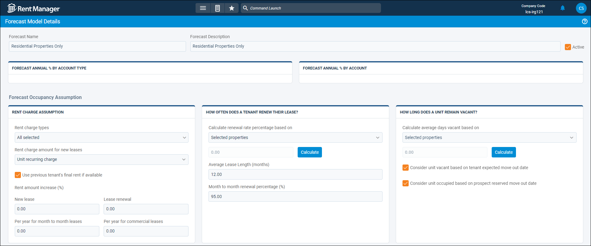
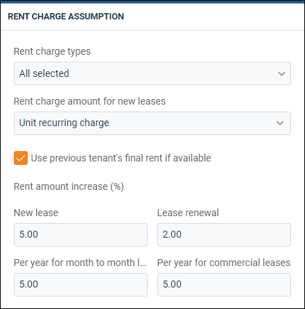
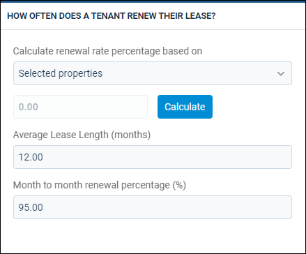
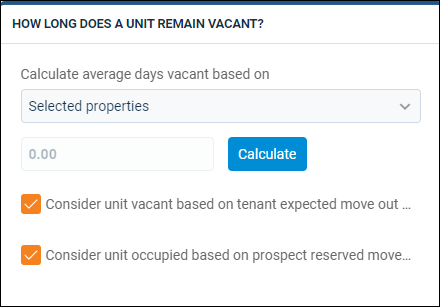

Source: https://rmxhelp.rentmanager.com/Topics/Express/CSH/Forecast-Models-Details.htm
Forecast Models Details (Page)
Forecast models are a set of financial and operational assumptions about your business, such as how much of an increase in rental income you foresee in the future, as well as your projections of increases in costs. Once a forecast model is saved into your database, you are able to view or edit the details provided when the forecast model was created. You may need to add more information or review what the forecast model is considering to better understand the results in the Profit & Loss Forecast report.
Related Privileges
| Group | Privilege | Column |
|---|---|---|
| Setup | Forecast Models | View, Edit |
For more information, refer to Control User Access.
To view the details of a forecast model, go to  arrow_forward Accounting arrow_forward
arrow_forward Accounting arrow_forward  Accounting Setup arrow_forward General arrow_forward Forecast Models and select a forecast model from the list.
Accounting Setup arrow_forward General arrow_forward Forecast Models and select a forecast model from the list.

Each forecast model is broken down into sections to make the information easy to find and understand. It provides a way to see how the information entered is affecting the results in the Profit & Loss Forecast report.
At the top of the page, you can view the Forecast Name and Forecast Description to provide context for the purpose of this forecast. If Active is checked, the model can be used with the Profit & Loss Forecast report. To make a model inactive, uncheck this field.
The following sections are available on the details page.
Forecast Annual % By Account Type
This section displays projected percent changes for each general ledger (GL) Account Type (Income, Expense, and so on). When the Profit & Loss Forecast report is generated, these account types display on their own lines with the account type's calculated increase or decrease.
Each number in the Percentage (%) column predicts a change for the corresponding account types. Subaccounts of this account type inherit this projection, unless specifically changed in the next section. To show a decrease, a hyphen (-) displays before the value.
Forecast Annual % By Account
This section displays projected percent changes for specific GL Account types (Rental Income, Insurance Expense, and so on). When the Profit & Loss Forecast report is generated, these account types display on their own lines with the account type's calculated increase or decrease.
To add a new row, click  Add Item.
Add Item.
| Column | Description |
|---|---|
|
Account |
The name of the desired individual GL account. |
|
Percentage |
The desired percentage you wish to project the change for the GL account. A decrease is signified witha hyphen (-) before the value. |
Rent Charge Assumption
This section allows you to view and manage how the model determines what charges are to be considered rent and the amount of rent increase for different types of leases.

| Field | Description | ||||||||||
|---|---|---|---|---|---|---|---|---|---|---|---|
|
Rent charge types |
The Rent Charge Types, as selected on the Property details page, which are factored into the forecast model. The cumulative amount of all selected rent charge types are used as each unit's projected rental rate. |
||||||||||
|
Rent charge amount for new leases |
|
||||||||||
|
Use previous tenant's final rent if available |
If checked, any previously rented unit uses the cumulative total of the most recent designated recurring rent charge types assessed to the last tenant. Otherwise, the source of rent charges selected in the Rent charge amount for new leases field is used. |
||||||||||
|
Rent amount increase (%) |
|
||||||||||
How Often Does a Tenant Renew Their Lease?
This section displays the process as to how the model projects renewal rates.

| Field | Description | ||||||||||||||
|---|---|---|---|---|---|---|---|---|---|---|---|---|---|---|---|
|
Calculate renewal rate percentage based on |
|
||||||||||||||
|
Average Lease Length (months) |
The length of time that projected leases last. |
||||||||||||||
|
Month to month renewal percentage (%) |
The percent of your tenants with month-to-month leases that do not move out each month. |
||||||||||||||
How Long Does A Unit Remain Vacant?
This section displays the process as to how the model projects vacancy rates.

| Field | Description | ||||||||||||||
|---|---|---|---|---|---|---|---|---|---|---|---|---|---|---|---|
|
Calculate average days vacant based on |
|
||||||||||||||
|
Consider unit vacant based on tenant expected move out date |
If checked, any unit with no Move Out Date on the Tenant details page is examined to see if an Expected Move Out Date is entered. If so, the report uses that date for projections. Otherwise, the unit is considered vacant only after a set Move Out Date is entered. |
||||||||||||||
|
Consider unit occupied based on prospect reserved move in date |
If checked, a vacant unit that is reserved by a prospect is considered occupied from the Expected Move In date. Otherwise, the unit is considered vacant until a Move In Date is entered on a tenant record. |
||||||||||||||